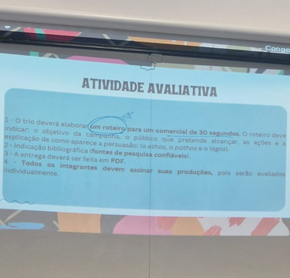
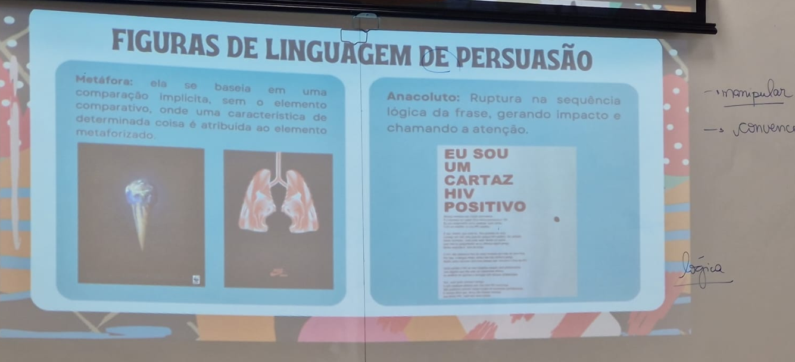
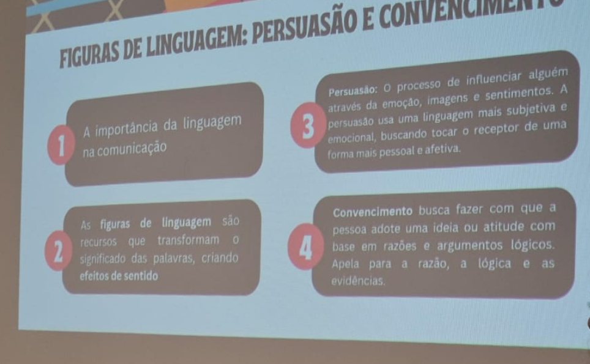
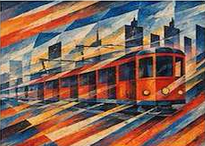

Áreas do Saber • Linguagens
Linguagens
Registros, anotações de aula e práticas desenvolvidas em Portugues, Artes e Ingles ao longo do Ensino Médio.
Português
Aprofundei a interpretação crítica de textos e o estudo das figuras de linguagem, estratégias de persuasão e convencimento, além da diferença entre publicidade e propaganda. O foco principal foi a preparação para a redação do ENEM, praticando a estrutura dissertativo-argumentativa (introdução, desenvolvimento e proposta de intervenção) e o uso de repertórios socioculturais.


Artes
Explorei diferentes linguagens artísticas e movimentos históricos, passando pelas vanguardas europeias — como o Cubismo — até as expressões da Arte Contemporânea. O estudo envolveu analisar como cada estilo reflete seu contexto social e cultural, além de exercitar a leitura visual e a criatividade.

Inglês
Estudei estruturas gramaticais e tempos verbais aplicados à leitura e interpretação de textos, com um foco prático voltado para o mercado de trabalho. Desenvolvi vocabulário profissional, elaborei meu currículo em inglês e pratiquei simulações de entrevistas de emprego para atuar na área de tecnologia.